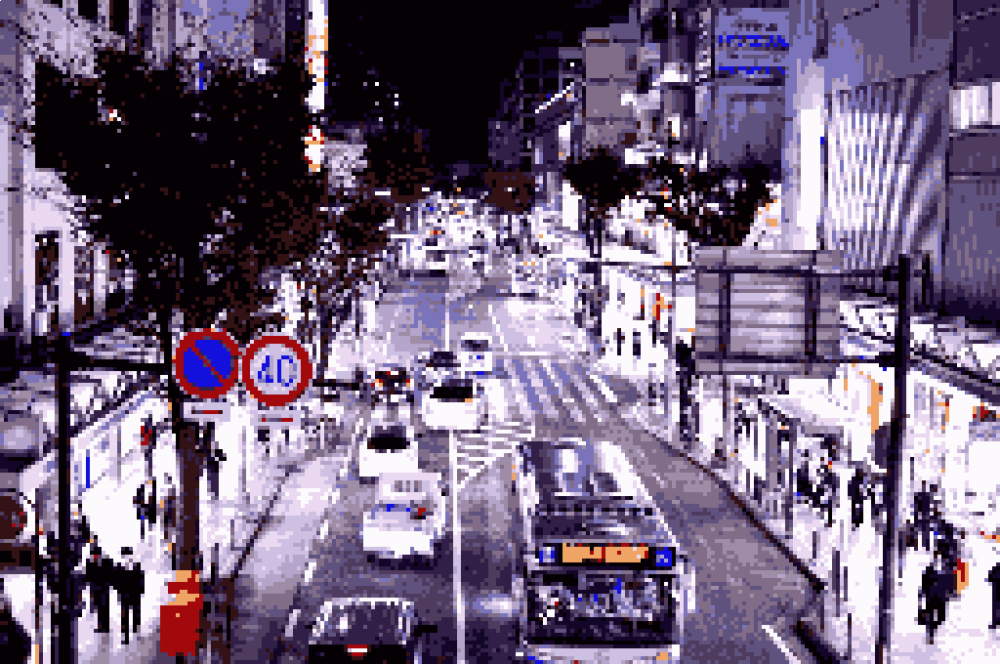

バショ:横須賀中央駅 Yデッキ

??????:神奈川県横須賀市、かつての日本帝国海軍都市、現在のアメリカ海軍在留地の軍港都市として知られる。 街には異国情緒あふれる様々なお店や文化が存在する。

?????:私たちはその横須賀の魅力を再発見するためにいろいろな場所を観光しながら、その情報を伝えていきたいと思います。
港ノヨーコ: こんばんは、申し遅れました、横須賀市民の港ノヨーコです。横須賀については私が詳しいので、基本的には私が主に進行していきます。
是津キリオ: 横浜市出身の是津キリオです。僕は港ノさんにリードされる形で、横須賀の様々な魅力を体験していきたいと思います。
港ノヨーコ: ちなみにここは京浜急行の「横須賀中央駅」です。ここがまさに横須賀の中央と呼ぶにふさわしい場所となっています。
是津キリオ: ちなみにここから約二キロメートル離れた所にはJR「横須賀」駅もあるのですが、ここはかつての日本海軍の基地への物資の輸送地として使われた名残から、 商業地域よりもむしろ港やアメリカ海軍基地へのアクセスが主となっている……らしいです。
是津キリオ: ……………………………… ………………この解説まだ続くの？
港ノヨーコ: えー……マジか せっかく<台本>用意したのに…… 仕方ない。ならばさっそくバスにでも乗ろう。
是津キリオ: もう遅いし夕飯食べたい。
港ノヨーコ: うーんどうしようかな。 迷うな～とりあえずバス停まで歩こう。
横須賀中央：Yデッキ→京急バス停のりば

是津キリオ: ノープランでここまで来ちゃったよ。
港ノヨーコ: 是津君がどこへ行くのか決めてよ。
是津キリオ: えー （丸投げかよ……） どうしよかな…